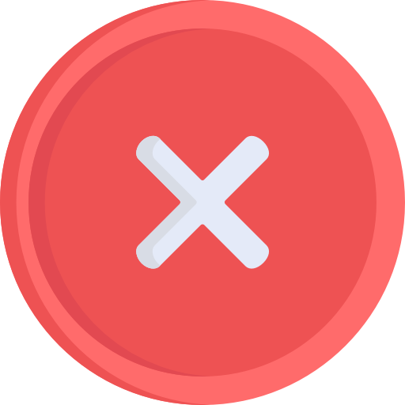

<ion-header [translucent]="true">
  <ion-toolbar class="background">
    <ion-buttons slot="start">
      <ion-menu-button></ion-menu-button>
    </ion-buttons>
    <ion-title class="color">beLoved</ion-title>
  </ion-toolbar>
</ion-header>

<ion-content [fullscreen]="true" class="background">
  <!-- Header -->
  <div class="header-title">
    <h2>Completed Tasks</h2>
  </div>

  <!-- Barra de búsqueda -->
  <div class="search-container">
    <ion-input animated="true" placeholder="Search Completed Task Title" class="ion-margin-top search-bar" type="text"
      [(ngModel)]="searchTask">
      <ion-button fill="clear" slot="end" (click)="searchTasks(searchTask)">
        <ion-icon name="search" class="search-icon"></ion-icon>
      </ion-button>
    </ion-input>
  </div>

  <!-- Mostrar tareas agrupadas por fecha -->
  <ng-container *ngFor="let date of taskDates">
    <h3>{{ date | date: 'yyyy-MM-dd' }}</h3> <!-- Encabezado con la fecha -->

    <div class="tasks-container">
      <ion-item-sliding *ngFor="let task of groupedTasks[date]" class="ourList-sliding">
        <ion-item (click)="goToDetailTask(task.id_task)" class="ourList-card"
          [ngStyle]="{ 'border-left': task.status === 2 ? '8px solid #00897B' : '8px solid #ff6d00' }">
          <ion-icon class="iconoTask" name="bookmark"></ion-icon>
          <span class="task-title">{{ task.title }}</span>
          <ion-icon class="arrowOurList" name="caret-forward-sharp"></ion-icon>
        </ion-item>

        <!-- Opciones de deslizamiento -->
        <ion-item-options side="end" class="item-options-custom">
          <ion-item-option class="item-option-custom edit-button" (click)="goToEditTask(task.id_task)">
            Edit
          </ion-item-option>
          <ion-item-option class="item-option-custom delete-button" (click)="deleteTask(task.id_task)">
            Delete
          </ion-item-option>
        </ion-item-options>
      </ion-item-sliding>
    </div>
  </ng-container>


  <!-- Mensaje si no hay tareas completadas -->
  <div *ngIf="!hasTasksCompleted" class="no-tasks-message">
    
    <p>No completed tasks available. Please complete some tasks!</p>
  </div>

  <ion-fab vertical="bottom" horizontal="end" slot="fixed">
    <ion-fab-button class="fab-button" (click)="goToAddTask()">
      <ion-icon name="add"></ion-icon>
    </ion-fab-button>
  </ion-fab>
</ion-content>